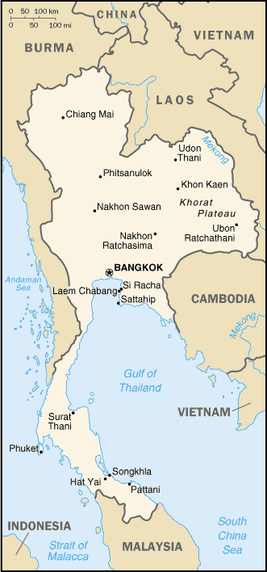
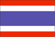

[Voir le carnet de route de la Thaïlande]
Itinéraire prévisionnel :
 Bangkok
Bangkok
 Chiang Maï
Chiang Maï
 île de Ko Chang
île de Ko Chang
 
Superficie : 514 000 km² (équivalente à la France)
Population : 63,3 millions d’habitants
Capitale : Bangkok
Peuples et ethnies : Thaïs (75%), Chinois (11%), Malais (3,5%), Môn, Vietnamiens, tribus montagnardes
Langue : thaï
Religions : Bouddhisme (95%), islam
Institutions politiques : monarchie constitutionnelle avec une forte influence de l’armée
Principales activités : Riz, informatique, textiles, pierres, tourisme
Visa : non nécessaire pour la France
Monnaie : le Baht (1€ = 51 Baht en 2004)
Budget quotidien : 12 à 20 €/jour
- Consulat :
8 rue Greuze, 75016 Paris.
Tél. : 01 56 26 50 50. Ouvert de 9h30 à 12h00.
Consulats à Bordeaux (tél. : 05 56 02 31 88), Lyon (tél. : 04 78 37 16 58) et Marseille (tél. : 04 95 05 47 00). - Organismes divers :
- Office de Tourisme : 90 av. des Champs-Elysées, 75008 Paris. Tél. : 01 53 53 47 00 (assez bonne documentation).
http://www.tourismethaifr.com/ - Association Franco-Thaï : 83 av. de Ségur, 75015 Paris. Association culturelle.
http://www.franco-thai.com
- Office de Tourisme : 90 av. des Champs-Elysées, 75008 Paris. Tél. : 01 53 53 47 00 (assez bonne documentation).
Ambassade de France :
| Adresse | 35 Custom House Lane, New road |
| Ville | Bangkok 10500 |
| Téléphone | (66 2)266 82 50 à 56 |
| Fax | (66 2)236 79 73 |
| URL | http://www.ambafrance-th.org |
Liste des médecins :
- Dentiste :
Ville : Bangkok
Nom : -
Adresse : -
Téléphone : -
Langues : -
Commentaire : Tous les hôpitaux semblent être bien équipés
- Généraliste :
Ville : Bangkok
Nom : Dr. SINGH Kanwar
Adresse : 2 Soi Soonvijai 7 Petchburi Road Bangkok _ General Hospital
Téléphone : 318 0066, 310 3000
Langues :
Commentaire : Semble bien
Ville : Bangkok
Nom : Dr. BALANKURA, Philippe
Adresse : PSE Clinic 1 Nares Road
Téléphone : (662) 236 14 01
Langues : Notamment français
Commentaire : Docteur apprové par l’ambassade française et il est également le médecin d’Air France
- Hôpital :
Ville : Bangkok
Nom : BUMRUNGRAD Hospital
Adresse : Soi Nana Nua 33 Sukhumvit 3
Téléphone : 667 1000
Langues : Anglais, Thaï et plus de 20 autres langues
Commentaire : Excellente qualité des soins.
Ville : Bangkok
Nom : Central General Hospital
Adresse : Près de l’aéroport
Téléphone : 552 87 77
Langues : -
Commentaire : Moins bon que le Bumrungrad Hospital
Ville : Bangkok
Nom : BHUMIPOL Hospital
Adresse : Air Force Hospital près de l’aéroport
Téléphone : 531 1999/27 338
Langues : -
Commentaire : Très bon
Ville : Bangkok
Nom : BANKOK General Hospital
Adresse : 2 Soi Soonvijai 7 New Petchburi Road
Téléphone : 318 00 66/310 3000
Langues : Anglais et Thaï
Commentaire : Qualité des soins excellente
Ville : Bangkok
Nom : SAMITIVEJ Hospital
Adresse : 133 Sukumvit 49 Klong Tan Nua, Vadhana
Téléphone : 392 00 11
Langues : Anglais et Thaï
Commentaire : Très bien, très bien...